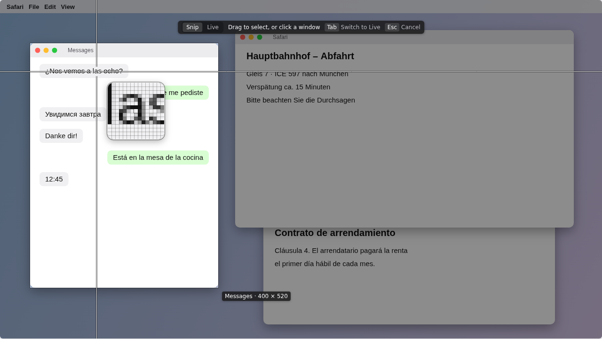
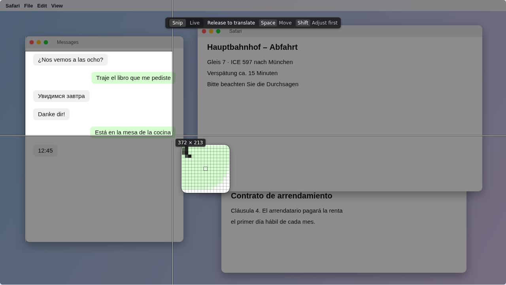
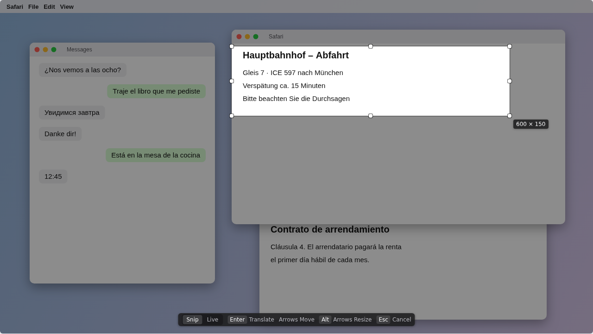
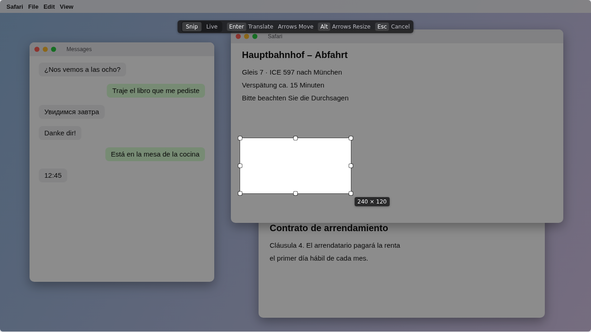
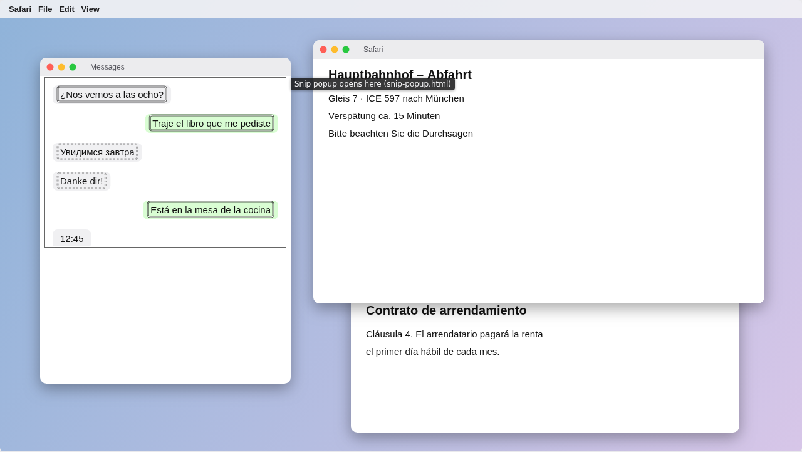
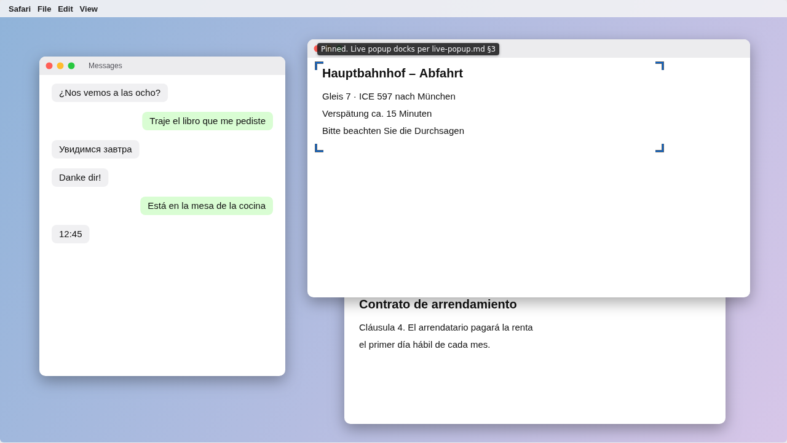
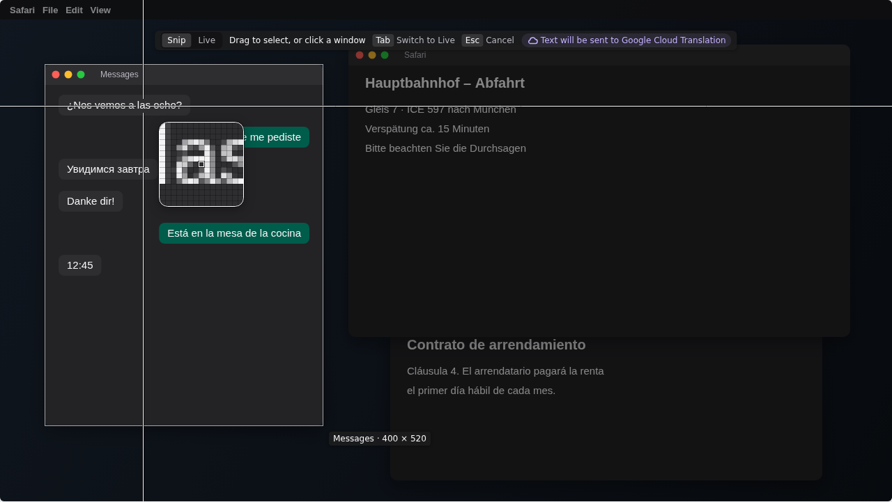

Interactive mockup for docs/design/specs/region-picker.md (GLIM-29), one 1280 × 720 display at 1:1. The "desktop" behind it is a canvas so the loupe can magnify real pixels. Click the stage to focus it, then use the pointer or keyboard exactly as the spec says. The picker's colours are theme-independent; the desktop toggle shows it over light and dark app content.
Key states (static renders of the same code)
Generated by replaying scripted input into the picker above: ?state=hover|drag|adjust|keyboard|confirmed|live (add &desk=dark&cloud=1).

Idle: window snap candidate. Hole, 60% stroke, “App · W × H”. Loupe and crosshair follow the pointer.

Dragging. Left edge snapped to the Messages window (guide). Readout sits outside the moving corner; the loupe shows the pixels under the pointer.

Adjusting (Shift-release). Eight handles; hint bar jumped to the bottom because the selection is near the top.

Keyboard box. Arrow key from idle: 240 × 120 around the pointer.

Snip confirmed: results layer. Scrim gone, selection edge kept; solid boxes translate, dashed boxes are skipped, 12:45 (neutral) has none.

Live confirmed. Overlay gone; corner ticks just outside the pinned area.

Dark apps, cloud translation on. Egress notice in the hint bar before anything is sent.